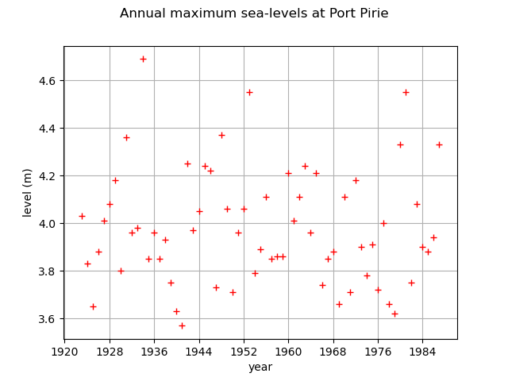
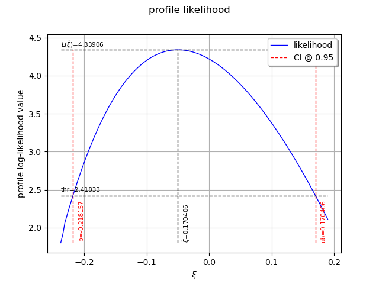
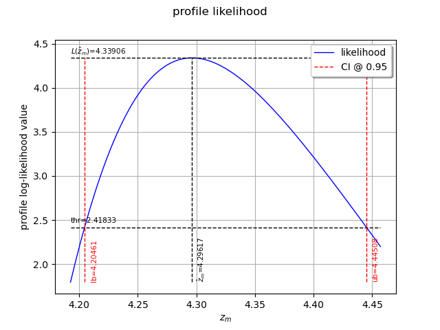
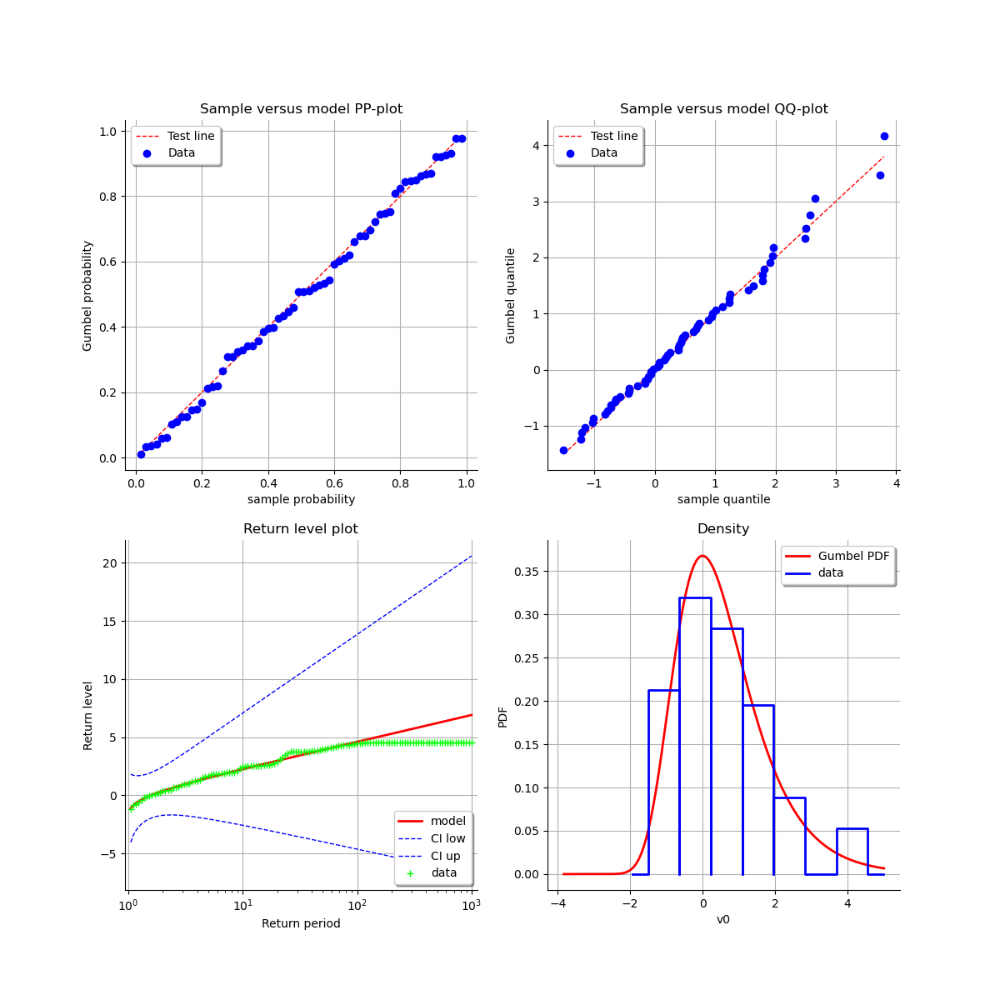

Note
Go to the end to download the full example code
Estimate a GEV on the Pirie sea levels data¶
In this example we are going to estimate the parameters of a generalized extreme value distribution on the sea levels data from [coles2001] with different methods:
the maximum likelihood estimation
the profile likelihood estimation
the estimation of return level from both maximum likelihood and profile likelihood
the maximum likehood estimator from independent observations (see [coles2001] paragraph 3.4.1)
the maximum likehood estimator with a non-stationary hypothesis (see [coles2001] paragraph 6.3.1)
Load the Port Pirie dataset of highest sea levels per year
import openturns as ot
import openturns.viewer as otv
import openturns.experimental as otexp
from openturns.usecases import coles
data = coles.Coles().portpirie
print(data[:5])
[ Year SeaLevel ]
0 : [ 1923 4.03 ]
1 : [ 1924 3.83 ]
2 : [ 1925 3.65 ]
3 : [ 1926 3.88 ]
4 : [ 1927 4.01 ]
Select the sea levels column
sample = data[:, 1]
Estimate the parameters of the GEV by maximizing the log-likehood and compute the parameter distribution
factory = ot.GeneralizedExtremeValueFactory()
result1 = factory.buildMethodOfLikelihoodMaximizationEstimator(sample)
Print the estimated parameter values
estimate = result1.getDistribution()
desc = estimate.getParameterDescription()
p = estimate.getParameter()
print(", ".join([f"{param}: {value:.3f}" for param, value in zip(desc, p)]))
mu: 3.875, sigma: 0.198, xi: -0.050
Inspect the estimated Gaussian parameter distribution
parameterEstimate = result1.getParameterDistribution()
print(parameterEstimate)
Normal(mu = [3.87478,0.198063,-0.0503071], sigma = [0.0269491,0.0236171,0.132889], R = [[ 1 0.232724 -0.276933 ]
[ 0.232724 1 -0.466698 ]
[ -0.276933 -0.466698 1 ]])
Inspect the covariance matrix
V = parameterEstimate.getCovariance()
print(V)
[[ 0.000726255 0.000148119 -0.000991761 ]
[ 0.000148119 0.000557766 -0.00146471 ]
[ -0.000991761 -0.00146471 0.0176594 ]]
Inspect the standard deviation
stddev = parameterEstimate.getStandardDeviation()
print(stddev)
[0.0269491,0.0236171,0.132889]
Extract parameters confidence intervals
for i in range(3):
ci = parameterEstimate.getMarginal(i).computeBilateralConfidenceInterval(0.95)
print(desc[i] + ":", ci)
mu: [3.82196, 3.9276]
sigma: [0.151774, 0.244351]
xi: [-0.310764, 0.21015]
Validate the inference result thanks to some diagnostic plots
validation = otexp.GeneralizedExtremeValueValidation(result1, sample)
graph = validation.drawDiagnosticPlot()
view = otv.View(graph)

Now estimate the parameters with the profile likelihood
result2 = factory.buildMethodOfProfileLikelihoodMaximizationEstimator(sample)
We can see the confidence interval of ![\xi]() is a bit smaller with this method
is a bit smaller with this method
result2.setConfidenceLevel(0.95)
print(result2.getParameterConfidenceInterval())
[-0.218157, 0.170406]
We can also plot the profile likelihood and the confidence interval
view = otv.View(result2.drawProfileLikelihoodFunction())

Estimate the 10 and 100 years return levels from the MLE estimator
zm10 = factory.buildReturnLevelEstimator(result1, 10.0)
return_level10 = zm10.getMean()
print(f"10 years return level={return_level10}")
return_level_ci10 = zm10.computeBilateralConfidenceInterval(0.95)
print(f"CI={return_level_ci10}")
zm100 = factory.buildReturnLevelEstimator(result1, 100.0)
return_level100 = zm100.getMean()
print(f"100 years return level={return_level100}")
return_level_ci100 = zm100.computeBilateralConfidenceInterval(0.95)
print(f"CI={return_level_ci100}")
10 years return level=[4.29619]
CI=[4.17408, 4.41829]
100 years return level=[4.68815]
CI=[4.28041, 5.09589]
Now estimate the 10 years return level with profile likelihood
result_rl10_prof = factory.buildReturnLevelProfileLikelihoodEstimator(sample, 10.0)
zm = result_rl10_prof.getParameter()
print(f"10 years return level (profile)={zm}")
10 years return level (profile)=4.305341115839941
We can see the confidence interval of ![z_m]() is a bit smaller with this method
is a bit smaller with this method
result_rl10_prof.setConfidenceLevel(0.95)
return_level_ci10 = result_rl10_prof.getParameterConfidenceInterval()
print(f"CI={return_level_ci10}")
CI=[4.2124, 4.45955]
We can also plot the profile likelihood and the confidence interval
view = otv.View(result_rl10_prof.drawProfileLikelihoodFunction())
Now formulate a non-stationary hypothesis for our parameters First we need the grid of time values (in years)
mesh = ot.Mesh(data[:, 0])
Now we can define the basis for each parameter. We suppose that mu is linear with time, and that the other parameters remain constant.
constant = ot.SymbolicFunction(["t"], ["1.0"])
basis_mu = ot.Basis([constant, ot.SymbolicFunction(["t"], ["t"])]) # linear trend
basis_sigma = ot.Basis([constant]) # stationary
basis_xi = ot.Basis([constant]) # stationary
basis_coll = [basis_mu, basis_sigma, basis_xi]
We can now estimate the list of coefficients of the parametric basis for each parameters the first 2 values are the coefficients for the mu basis
result3 = factory.buildTimeVarying(sample, mesh, basis_coll)
p = result3.getOptimalParameter()
b_mu, a_mu = p[:2]
print(p)
print(f"mu(t) = {b_mu:.4f} + {a_mu:.4f} * t")
[4.8178,-0.000482304,0.198037,-0.0508286]
mu(t) = 4.8178 + -0.0005 * t
We can draw the estimated mu parametric function Lets superpose the cloud of data values
graph = result3.drawParameterFunction(0)
cloud = ot.Cloud(data)
cloud.setColor("red")
graph.add(cloud)
view = otv.View(graph)

The visual evidence of a trend is weak in the graph. The strength of this evidence can be assessed with the deviance statistics:
llh1 = result1.getLogLikelihood()
llh3 = result3.getLogLikelihood()
result4 = ot.HypothesisTest.LikelihoodRatioTest(llh1, llh3, 0.05)
accepted = result4.getBinaryQualityMeasure()
print(f"hypothesis H0(stationary model) accepted={accepted}")
hypothesis H0(stationary model) accepted=True
The deviance statistics ![D_p]() is small compared to the Chi2 quantile
it means that the linear trend component can only explain a small variation in the data
and is not a genuine effect in the sea-level process but rather a chance feature in the observed data
is small compared to the Chi2 quantile
it means that the linear trend component can only explain a small variation in the data
and is not a genuine effect in the sea-level process but rather a chance feature in the observed data
print(f"Dp={result4.getStatistic():.2f}")
print(f"cAlpha={result4.getThreshold():.2f}")
Dp=0.06
cAlpha=3.84
We can also draw the quantile(t) function for a given quantile level Here it is also linear as the trend is linear only on the mu parameter
graph = result3.drawQuantileFunction(0.5)
view = otv.View(graph)

otv.View.ShowAll()